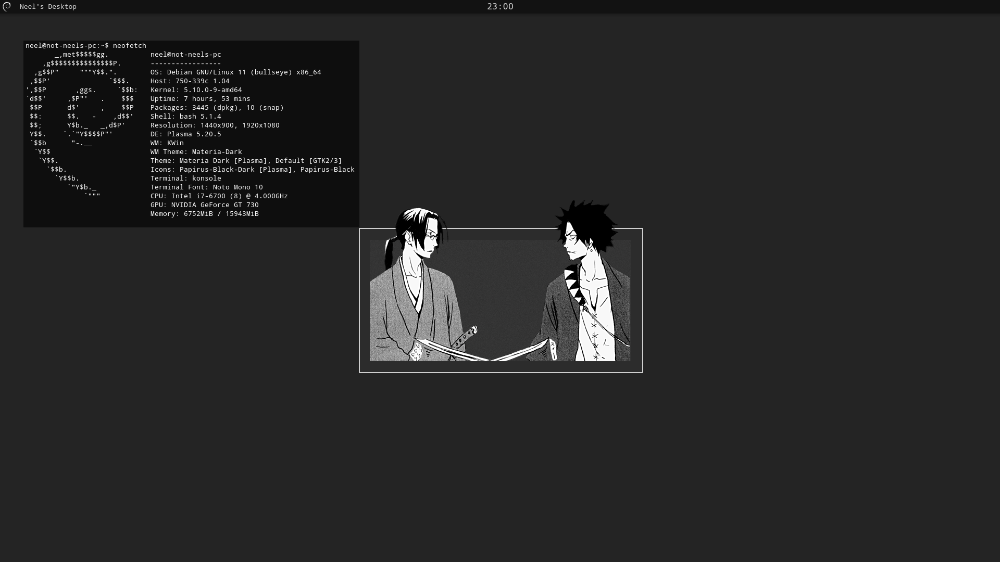

How I Switched to Linux
2021-10-24
I've used Windows from XP all the way up to 10. For roughly 15 years of my life, I've been in the Windows ecosystem. While Windows 10 isn't terrible, Linux is just way more customizeable and really great if you actually care about how your computer hardware and software works. There's way more reasons than just that, (as I will explain in a future blog some day ;)).
I've used Linux before when I used to try to run Steam games on my Chromebook (seems like Debian is now just natively supported on ChromeOS, so good on them!), but my first time using Linux properly was when I installed KDE Neon. I didn't really know what I was doing, but I spent at least 2 or 3 days just messing around in the settings. For the first time in a long time, I was having fun with my operating system. This feeling of discovering things in my system is something I used to experience a lot as a kid learning about Windows and that feeling was the exact same as I went through unlimited amount of ways that I can change the way my desktop looks. Features like having whatever I want in my taskbar was so cool and really made me wonder "why doesn't Microsoft allow you to do this?".
Not everything was sunshine and rainbows, though. The second I booted into KDE Neon, my 2nd monitor was flashing like crazy and I had to do about 20 minutes of internet research to fix it. This was a recurring theme with any little issue I had. On top of that, it just made sense for me to do my schoolwork and use certain applications like Photoshop and Sony Vegas while I had limited time to do things. Since I dual boot Windows and Linux, I would naturally just go to Windows whenever I wanted to do pretty much anything.
For some dumb reason, I thought that it was the fault of Linux and not me as to why I kept crawling back to Windows, so I did what any Linux user who gets bored of their system would do: distro hop.
Arch Linux is considered to be one of the best distros for many valid reasons, but it is hard to install, especially for beginners. At that time, Garuda Linux, which is based on Arch Linux, easier to install, and is optimized for gamers, was starting to become popular. I really liked how it looked and so I installed it, thinking that it would truly convert me into a fully-fledged Linux user. I was somewhat successful. My issues of "being forced" to use applications like Sony Vegas and Microsoft Teams forced me to stick with Windows for a little longer, but around the middle of summer is when I started to really appreciate some features on Linux. That's when I had the bright idea of distro hopping once more to a more minimalist distro. The problems of Garuda Linux is that its performance is slightly better than Windows, but I knew that I could do way better.
Debian 11 Bullseye is what I'm using right now. It's considered to as the "Granddaddy of 'all' distros" (while not entirely true, it is what Ubuntu is based off of, along with many other distros). Ubuntu is the most mainstream distro, and is normally what people think of when they think of Linux, so naturally that's the only option that's ever listed whenever I need to install some application. With Debian, I have the ability to do mostly everything someone on Ubuntu is able to do.
In the weeks between the end of Cadets summer training and the first day of school, I really familiarized myself with the KDE desktop environment and the terminal. I also started using FOSS (free and open-source) alternatives to proprietary software, such as GIMP and open-source versions of Chrome (ungoogled-chromium) and VSCode (codium). Doing little things like that and also having a really cool and aesthetically-pleasing rice solidified my stay. (also, I made that wallpaper, the center features a manga panel from Samurai Champloo).

Update (May 10, 2022): After about 7 months, I really don't like this article to be honest, but it shows what I cared about at the time of making it. Adding on to the list of why I use Linux, it boils down to ease of use and the ability to customize. Linux and ease of use don't seem to belong in the same sentence but I truly believe that it's true. Think about all the different types of setting menus you have on Windows for example. On Linux, depending on various factors, you can either change some variables in a file, use the terminal, and/or use a much simpler settings menu that was built from the ground up. Windows also doesn't ever make you feel like you're in control. The UI changes all the time, there's ads within the OS, there's a bunch of programs you didn't want to use or download, and it constantly promotes their search engine and browser. Linux makes you feel like a homeowner, Windows makes you feel like a tenant of a strict apartment.